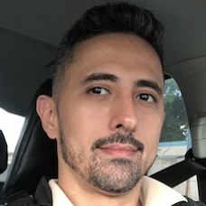

Marcio Coelho
Autodidata desde os primeiros contatos com o primeiro PC. Atualmente trabalhando na área portuária, porém, amante da área de TI, já tendo passado por diversas ramificações do segmento. Busca no curso de Sistemas para Internet da Fatec Rubens Lara – Baixada Santista, aprofundar seus conhecimentos na área de lógica de programação e algoritmos, juntamente com desenvolvimento web – matérias que são de maior interesse.
| Nome | Marcio Rodrigues Paiva Coelho |
|---|---|
| marciocoelho@gmail.com | |
| Data de nascimento | 09/09/1981 |
| Naturalidade | Santos/SP |
| Ocupação | Estudante; Portuário |
| Hobby | Futebol |
| Time | São Paulo |
| Filme / série | Friends |
| Cor (es) | |
| Citação | "Ser humilde não é ser menos que alguém. É saber que não somos mais que ninguém." Autor: Carlos Hilsdorf |